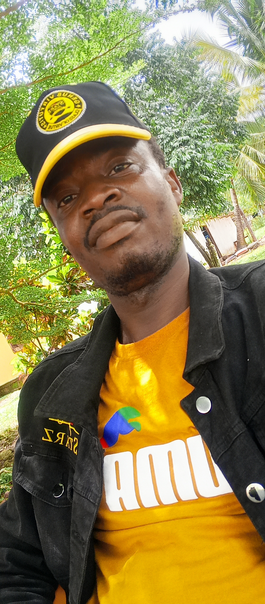

Generally speaking, the African history was not writtern so many years ago, but it was base on oral history such as battle song, tie, and story told by grandparents to their children. Because there were not a written history, most of the Family history were not acturely correct because, mose of the edles in the family die at younger age. Therefore, this Nessian family history were just trace years age. meamwhile, the great grandfather that this Nessian family his begin from is was called Gbanquoi Bolomen.
The Nessian family is one of the bigger and largest family in the township of
Gipo. Gipo is a township located in Gbannah Cheifdowm in District number 8 in Nimber County.
Discription of Mr. Gbanquoi Bolomen
Mr. Bolomen was Eight (8) feet five (5) inch with brown teeth, hairy long face etc.
The Nessian Family Organization NEFOR for short, is an non Govermental Organization (NGO) formed by the Nessian Family of Gipo Township. This Organization was founded in 2014, by Joshua Paye Nessian, one of the sons of the Nessian family.
As a son and a member of the Nessina Family, a family that come from a very poor backgroud, I have a vision of marking my family as the riches family in the Township of Gipo, Nimba county, Liberia and the world as large. I have the vision and dreams about how we can feel ourself as a family, how can we as a family empower ourself in fighting agaist the spirit of poverty that had been holding us down.

The Chairmen
Ensure compliance with legal and regulatory requirements, as well as ethical standards. Monitor the organization’s performance and risk management practices to safeguard its reputation and resources. Manage board meetings effectively by setting the agenda, facilitating discussions, and ensuring decisions are made in the best interest of the organization. Foster an inclusive and collaborative board culture. Relationship Building: Cultivate relationships with stakeholders, including members, donors, partners, and the community. Represent the organization externally and promote its mission and values. Financial Stewardship: Oversee the organization’s financial health by monitoring budgets, financial statements, and audits. Ensure responsible financial management practices are in place to sustain the organization’s operations. Leadership Development: Support the development of board members and senior leadership to ensure a strong and knowledgeable leadership team. Foster a culture of learning, growth, and accountability within the organization. Risk Management: Identify and mitigate risks that may impact the organization’s operations, reputation, or mission. Implement strategies to address potential challenges and ensure organizational resilience. Advocacy and Public Relations: Advocate on behalf of the organization to raise awareness of its mission, programs, and impact. Engage with media, policymakers, and other stakeholders to advance the organization’s goals. Conflict Resolution. Address conflicts or disputes within the organization in a timely and fair manner. Promote open communication and collaboration to resolve issues and maintain a positive organizational culture. Succession Planning: Develop a plan for leadership succession to ensure continuity and stability within the organization. Identify and nurture future leaders to support the organization’s long-term sustainability. Seek Feedback: Regularly solicit feedback from board members, senior leadership, and stakeholders on your leadership style and effectiveness. Use their insights to identify areas for improvement and adjust your approach accordingly.
The President Provide guidance and support to the board of directors in fulfilling their governance responsibilities. Foster a culture of transparency, accountability, and ethical conduct within the organization. Organizational Leadership: Lead the organization by setting a clear vision, inspiring stakeholders, and fostering a culture of collaboration, innovation, and excellence. Motivate and empower staff, volunteers, and members to achieve organizational objectives. External Relations: Serve as the primary spokesperson and representative of the organization to external stakeholders, including donors, partners, regulators, media, and the public. Build and maintain positive relationships to enhance the organization’s reputation and credibility. Fundraising and Resource Development: Develop and execute fundraising strategies to secure financial resources, grants, donations, and sponsorships to support the organization’s programs and operations. Cultivate donor relationships and pursue opportunities for revenue diversification. Financial Management: Oversee the organization’s financial health, budgeting, and fiscal management. Ensure financial sustainability, compliance with regulatory requirements, and effective utilization of resources to achieve organizational objectives. Program Development and Evaluation: Work with staff and volunteers to design, implement, and evaluate programs and initiatives that align with the organization’s mission and strategic priorities. Monitor program outcomes and impact to drive continuous improvement.
Risk Management: Identify and mitigate risks that may impact the organization’s reputation, operations, or financial stability. Develop risk management strategies and contingency plans to address potential threats and challenges.
Organizational Development: Invest in the professional development and capacity building of staff, volunteers, and members to strengthen the organization’s capabilities and effectiveness. Foster a culture of learning and continuous improvement.
Advocacy and Public Policy: Engage in advocacy efforts to influence public policy, legislation, and regulations that align with the organization’s mission and values. Advocate for social change and justice on behalf of the community or cause served by the organization.
Conflict Resolution and Crisis Management: Address conflicts, disputes, and crises within the organization with fairness, professionalism, and transparency. Implement crisis management plans to mitigate potential disruptions to the organization’s operations and reputation.
that may impact the organization’s reputation, operations, or financial stability. Develop risk management strategies and contingency plans to address potential threats and challenges.
Organizational Development: Invest in the professional development and capacity building of staff, volunteers, and members to strengthen the organization’s capabilities and effectiveness. Foster a culture of learning and continuous improvement.
Advocacy and Public Policy: Engage in advocacy efforts to influence public policy, legislation, and regulations that align with the organization’s mission and values. Advocate for social change and justice on behalf of the community or cause served by the organization.
Conflict Resolution and Crisis Management: Address conflicts, disputes, and crises within the organization with fairness, professionalism, and transparency. Implement crisis management plans to mitigate potential disruptions to the organization’s operations and reputation.
The Secretary General Overseeing the day-to-day operations of the organization, including managing resources, budgeting, and ensuring compliance with legal and regulatory requirements.
External Relations: Representing the organization to the public, media, stakeholders, and other organizations. Building and maintaining strong relationships with partners, donors, and supporters.
Advocacy  and Communication: Advocating for the organization's mission and goals. Communicating with members, the public, and other stakeholders through various channels to raise awareness and support for the organization.
Strategic Planning: Developing and implementing strategic plans to advance the organization's mission and vision. Setting goals, objectives, and tactics to drive the organization forward.
Partnerships and Collaborations: Identifying and establishing partnerships with other organizations, governments, and agencies to enhance the organization's impact and reach.
Fundraising and Resource Mobilization: Developing fundraising strategies, securing funding sources, and managing resources effectively to support the organization's programs and activities.
the abilities to Think and re-think, he or she will have the abilities to reproduce what is or was given to them.
Upon this saying, the Nessian Family Organization (NEFOR) have a pillow that is resposible for all Educational issue.
and Communication: Advocating for the organization's mission and goals. Communicating with members, the public, and other stakeholders through various channels to raise awareness and support for the organization.
Strategic Planning: Developing and implementing strategic plans to advance the organization's mission and vision. Setting goals, objectives, and tactics to drive the organization forward.
Partnerships and Collaborations: Identifying and establishing partnerships with other organizations, governments, and agencies to enhance the organization's impact and reach.
Fundraising and Resource Mobilization: Developing fundraising strategies, securing funding sources, and managing resources effectively to support the organization's programs and activities.
the abilities to Think and re-think, he or she will have the abilities to reproduce what is or was given to them.
Upon this saying, the Nessian Family Organization (NEFOR) have a pillow that is resposible for all Educational issue.
Monitoring and Evaluation: Establishing mechanisms to monitor and evaluate the organization's performance and impact. Ensuring accountability and transparency in operations.
Staff Management: Leading and managing a team of staff and volunteers, ensuring a positive work environment, professional development, and effective performance.
Crisis Management: Being prepared to respond to crises, emergencies, or unexpected events that may affect the organization's reputation, operations, or members.
Global Engagement: Engaging with international partners, stakeholders, and organizations to promote the organization's mission on a global scale.
Innovation and Adaptation: Keeping up with latest trends, technologies, and developments in the field to innovate and adapt the organization's strategies and operations.
Set Clear Goals and Objectives: Work with key stakeholders to establish clear and achievable goals for the organization. Ensure that these goals are aligned with the organization’s mission and vision.
Create a Strategic Plan: Develop a strategic plan that outlines the steps needed to achieve the organization’s goals. This plan should include timelines, responsibilities, and performance indicators to track progress.
Communicate Effectively: Keep members and stakeholders informed about the organization’s vision, goals, and progress. Regularly communicate updates, achievements, and challenges to maintain transparency and alignment.
The Advisor Assist the board of directors in fulfilling their governance responsibilities,
including board development, succession
planning, and policy development. Provide guidance on best practices
in board governance and ethical leadership.
 Mentorship and Coaching: Mentor and coach staff, volunteers, or emerging leaders
within the organization to help them develop their skills, competencies, and leadership potential.
Offer guidance on personal and professional growth.
Mentorship and Coaching: Mentor and coach staff, volunteers, or emerging leaders
within the organization to help them develop their skills, competencies, and leadership potential.
Offer guidance on personal and professional growth.
 Capacity Building: Support the organization in building its
capacity and capabilities in areas such as fundraising, program development, communications, and strategic planning. Provide training, resources, and tools to help the organization enhance its effectiveness and impact.
Advice on Fundraising**: Offer advice on fundraising strategies, donor cultivation, grant writing,
and diversification of revenue streams. Help the organization identify funding opportunities and develop
sustainable fundraising plans.
Evaluation and Impact Assessment**: Assist the organization in developing monitoring and evaluation systems
to track program outcomes and assess impact. Provide guidance on data collection, analysis, and reporting to
demonstrate the organization’s effectiveness.
Conflict Resolution: Help resolve conflicts or issues within the organization in a fair,
constructive, and impartial manner. Mediate disputes and facilitate constructive
communication to maintain a positive work environment.
Crisis Management: Provide support and guidance during times of crisis, emergencies,
or unexpected challenges. Assist the organization in developing crisis communication plans and strategies
to manage unforeseen situations effectively.
Capacity Building: Support the organization in building its
capacity and capabilities in areas such as fundraising, program development, communications, and strategic planning. Provide training, resources, and tools to help the organization enhance its effectiveness and impact.
Advice on Fundraising**: Offer advice on fundraising strategies, donor cultivation, grant writing,
and diversification of revenue streams. Help the organization identify funding opportunities and develop
sustainable fundraising plans.
Evaluation and Impact Assessment**: Assist the organization in developing monitoring and evaluation systems
to track program outcomes and assess impact. Provide guidance on data collection, analysis, and reporting to
demonstrate the organization’s effectiveness.
Conflict Resolution: Help resolve conflicts or issues within the organization in a fair,
constructive, and impartial manner. Mediate disputes and facilitate constructive
communication to maintain a positive work environment.
Crisis Management: Provide support and guidance during times of crisis, emergencies,
or unexpected challenges. Assist the organization in developing crisis communication plans and strategies
to manage unforeseen situations effectively.
The Financial Secretary finance committee. Monitor budget performance, analyze variances, and provide regular updates on the organization’s financial status.
Financial Reporting: Prepare regular financial reports, including income statements, balance sheets, cash flow statements, and financial forecasts. Present financial reports to the board of directors, funders, or stakeholders as required.
Audit Preparation and Compliance: Coordinate with external auditors or accountants to ensure timely completion of annual audits or financial reviews. Ensure compliance with financial reporting standards, tax regulations, and legal requirements.
: 
Expense Management: Process invoices, reimbursements, and payments in a timely manner.
Verify expenses, receipts, and documentation for accuracy and compliance with budget allocations
and financial policies.
Financial Controls and Policies**: Establish and enforce financial controls, policies, and procedures to safeguard assets, prevent fraud, and ensure financial integrity.
Implement internal controls for approval processes and financial transactions.
Grant Management: Assist in managing grants, contracts, or funding agreements by tracking expenditures, reporting on grant compliance, and ensuring proper allocation of funds according to grant requirements.
Financial Planning and Analysis: Provide financial analysis, projections, and insights to support decision-making and strategic planning. Identify financial risks, opportunities, and trends to help the organization achieve its financial goals.
Financial Policies and Training: Develop financial policies, procedures, and guidelines for the organization. Provide training and support to staff, volunteers, or board members on financial processes, compliance, and best practices.
Financial Transparency and Communication: Maintain open communication with stakeholders regarding the organization’s financial performance, challenges, and opportunities. Ensure transparency in financial reporting and disclosures.